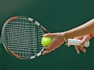
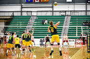
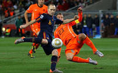

Tennis

Tennis is a racket sport that can be played individually against a single opponent (singles) or between two teams of two players each (doubles). Each player uses a tennis racket that is strung with cord to strike a hollow rubber ball covered with felt over or around a net and into the opponent's court.
>Readmore
VolleyBall

Volleyball is a team sport in which two teams of six players are separated by a net. Each team tries to score points by grounding a ball on the other team's court under organized rules. It has been a part of the official program of the Summer Olympic Games since 1964. The complete rules are extensive.
Readmore
Football

Images, from top down, left to right: association football, Australian rules football, international rules football, a rugby union scrum, rugby league, and American football. Football is a family of team sports that involve, to varying degrees, kicking a ball with the foot to score a goal.
Readmore
Running
Running is a way for humans and animals to move rapidly on foot, and is a method of terrestrial locomotion. When running, all feet are above the ground, which is different from walking where one foot is always in contact with the ground>. See the fact file below for more running information and history.
Features
Many scientists believe that our ancient ancestors needed to run long distances to catch food, or escape harm. Weapons such as the bow and arrow and spear-thrower eventually helped early man hunt without having to run such long distances.
A sport is commonly defined as an athletic activity or skill and involves a degree of competition, such as baseball, soccer
No one knows when running became a recreation but races of 3200 meters took place in Egypt 3800 B.C.A sport is commonly defined as an athletic activity or skill and involves a degree of competition, such as baseball
Readmore